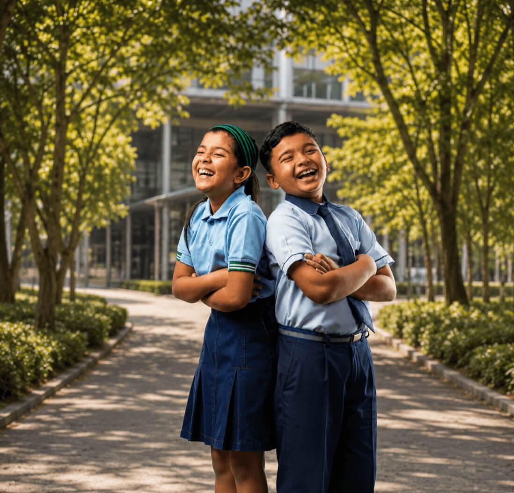
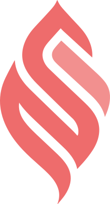

Our work
Three sources of light
Community is the present. Youth and education are the next. Ideas are the foundation beneath both. Research and advocacy run through all three.
3
core pillars
13
active programmes
8
states reached

Suluh Centre
The four, working as one
Pick a pillar to explore

The spine, not a fourth pillar
Where Research Meets Impact
Research generates the evidence. Advocacy carries it to change. Policy briefs, surveys, round tables and parliamentary engagement cut across all three pillars.
